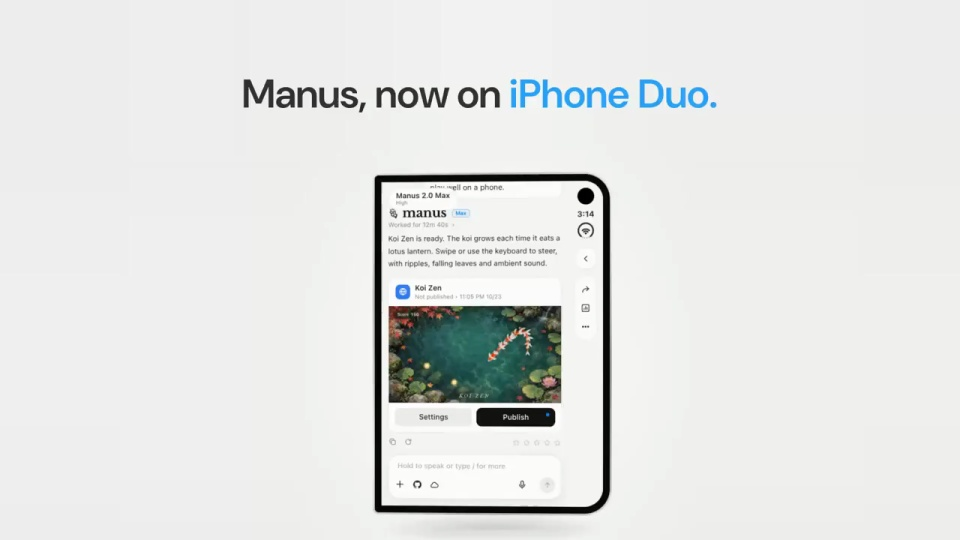
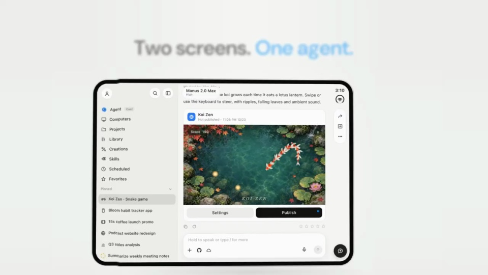
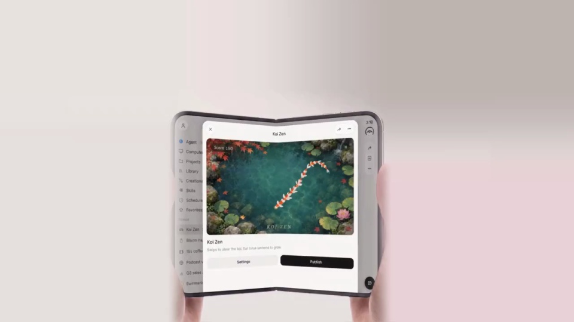
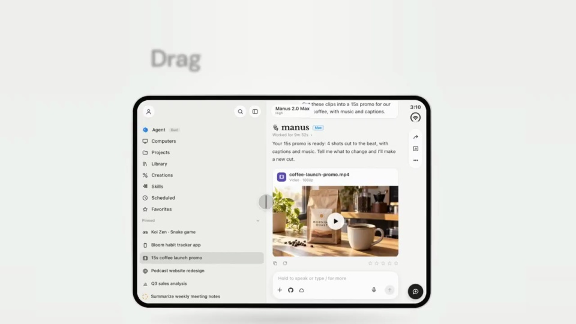
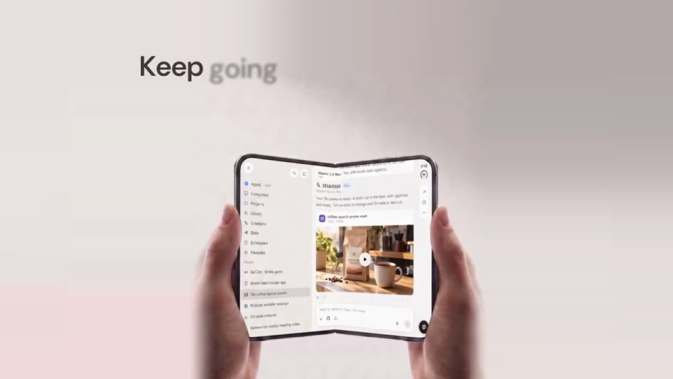
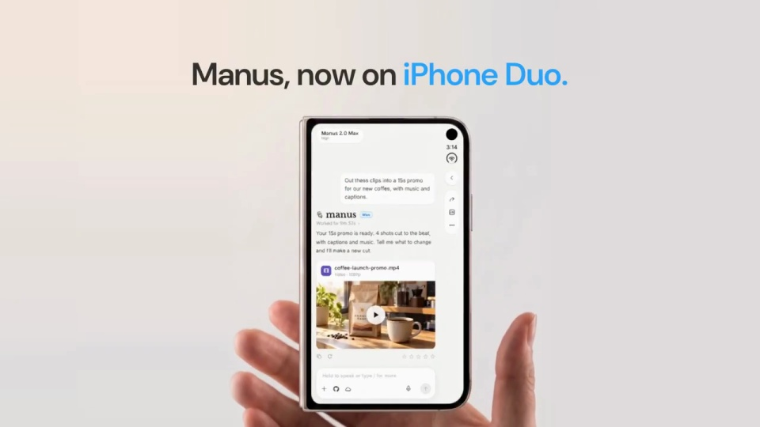

Manus / V050
适配 iPhone Duo
把屏幕展开当作布局变化，而不是切到另一项任务。设备形态变化，任务标题、结果与操作位置要能追得上。
构图与编排 可播放 · 可替换内容
整体编排规则示例
查看 HTML 源码
<!doctype html><html lang="zh-CN"><meta charset="utf-8"><meta name="viewport" content="width=device-width,initial-scale=1"><title>适配 iPhone Duo · sequence</title><style>html,body{margin:0;width:100%;height:100%;overflow:hidden;background:#f7f8f6}canvas{display:block;width:100%;height:100%;object-fit:contain}</style><body data-mode="sequence"><canvas width="1000" height="600"></canvas><script src="data.js"></script><script src="common.js"></script><script src="scene.js"></script><script src="bridge.js"></script></body></html>画面元素折叠设备铰链侧栏成果视图外屏
MOTION LANGUAGE
动作与构图
局部动作 · 构图规则
01
窄屏里先建立内容锚点
开场保留一个清楚的任务和一个可辨认成果。展开时围绕设备中线增加宽度，让原有内容留在一侧，新空间用来容纳侧栏或第二面板。
边框用深色，内容区用浅色；字形沿用清晰界面字体。强调色服务于同一任务，折叠前后不要突然换一套色彩。
02
宽屏要展示新的空间价值
宽屏要展示新的空间价值规则示例
查看 HTML 源码
<!doctype html><html lang="zh-CN"><meta charset="utf-8"><meta name="viewport" content="width=device-width,initial-scale=1"><title>适配 iPhone Duo · sequence</title><style>html,body{margin:0;width:100%;height:100%;overflow:hidden;background:#f7f8f6}canvas{display:block;width:100%;height:100%;object-fit:contain}</style><body data-mode="clip" data-start="6" data-end="14"><canvas width="1000" height="600"></canvas><script src="data.js"></script><script src="common.js"></script><script src="scene.js"></script><script src="bridge.js"></script></body></html>展开后依次展示游戏、预览、全屏媒体与可调整分栏，让额外空间对应不同使用方式。调整分栏时保持任务栏稳定，成果随可用区域重新排版。
避免只把窄屏内容横向拉伸。文字换行、侧栏出现与媒体尺寸应各自响应宽度变化。
03
折回后还在做同一件事
收起内屏时，先保持任务结果，再把它接到外屏。外屏可以省略次要操作，但任务名、最新结果或继续入口必须留下。
更换设备或产品时，优先规划窄屏、宽屏、外屏三种内容关系，再设计边框与折叠外观。
SEQUENCE
段落与节奏
点击段落，定位到上方编排示意。






画面参考 · 离散静帧
KEEP THE RELATIONSHIPS
制作其他主题
- 迁移保留形态改变→布局适配→上下文连续
- 可替换任务内容与设备外形，但不要把内外屏做成无关内容
制作约束
折叠设备 / 铰链 / 侧栏 / 成果视图 / 外屏
- 设备宽度变化时同一任务继续显示，不是切成新任务
- 宽屏承载分栏与多屏预览，外屏回到单列
- 真实手持镜头用于证明折叠动作，功能字幕先于或同步出现